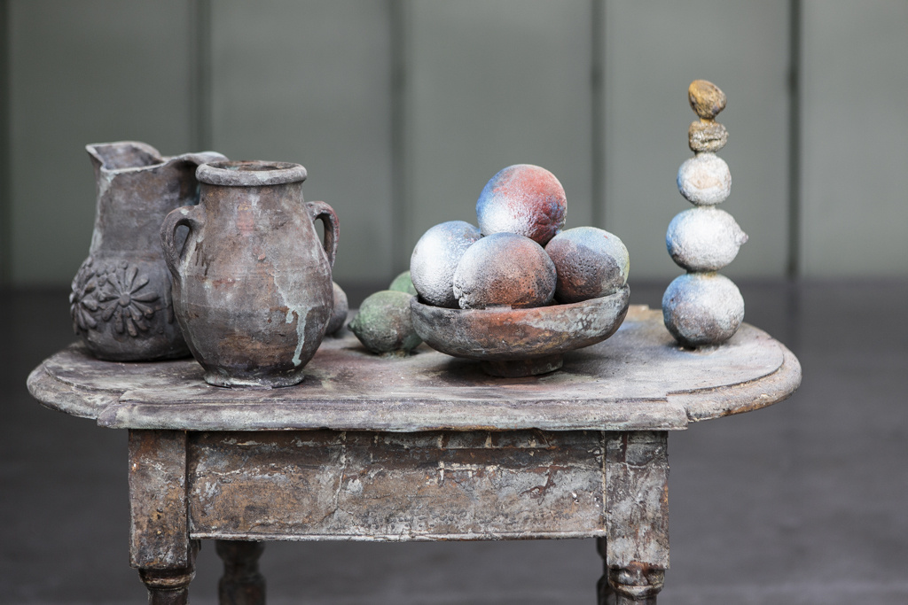

Heeft de collectie een thema?
Jazeker, jij. Alle kunstwerken in het LAM museum hebben iets met jou te maken, ja echt. Zo divers als de collectie kunstwerken is, zo perfect passen ze bij elkaar. Allemaal hebben iets ze iets te maken met wat jij dagelijks doet en waaraan je dagelijks denkt: eten, drinken en winkelen.
Foodart, wat moet ik me daarbij voorstellen?
Denk aan een gigantische porseleinen installatie van een jaar lang eten en drinken, een jonge moeder met baby en boodschappen die zo lijkt weg te lopen, een zelfportret van suikerklontjes met de magie van LEGO, een feestelijk diner dat uit de hand dreigt te lopen en een drie meter lange tros beschimmelde druiven van fonkelende edelstenen en kralen. En oh, dat bewegende stilleven mag je ook zeker niet missen. Helemaal als je wel wat instant mindfulness kunt gebruiken.
